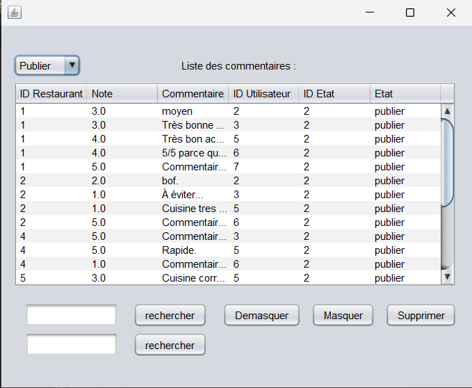

Projet Moderateur
Description du projet
Lors de ma deuxième année de BTS SIO, j'ai participé, au sein d'une équipe de trois personnes, à la création d'une application de modération des avis pour le site R3st0.fr. Destinée aux modérateurs et au responsable du site, cette application permet d'afficher les avis publiés, de les filtrer, ainsi que de masquer, démasquer ou supprimer ceux jugés inappropriés ou non conformes
Technologies
- PHP / JAVA / SQL
Compétences
▸Gérer des sauvegardes (Versionning Git) ▸Planifier les activités (Tableau de Kanban) ▸Déployer un service (Déploiement d’un exécutable) ▸Développer son projet professionnel (Mot de passe chiffré)
Dans le cadre de l’évolution du site R3st0.fr, j'ai traité diverses demandes d'amélioration en corrigeant des anomalies, en optimisant certaines fonctionnalités existantes et en intégrant de nouveaux besoins exprimés par les utilisateurs. Ce projet m’a permis de participer activement à l’enrichissement du site web, en exploitant efficacement les données de l’organisation pour offrir une expérience utilisateur plus complète et performante. Vous pouvez le consulter ici : https://gitlab.com/Crouan/projet_java_moderation
